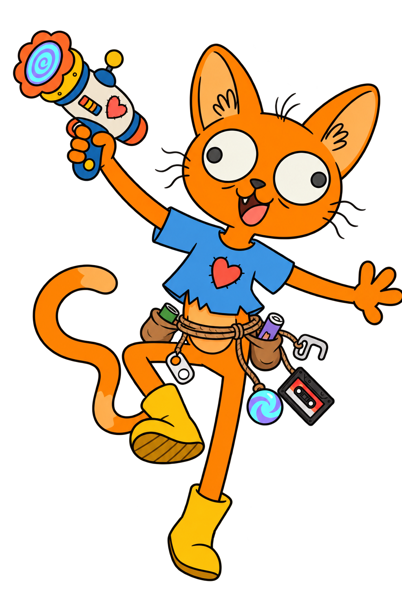

GATO
Gato es el protagonista principal y mellizo de Crunchy. Es un gato naranja, delgado, curioso, impulsivo e ingenuo. Actúa sin pensar, provocando el caos sin mala intención. Es bondadoso, confía en los demás y siempre busca ayudar. Le encanta explorar, hacer amigos, comer y coleccionar objetos extraños. Cada aventura le ayuda a comprender mejor sus emociones y las de Crunchy.